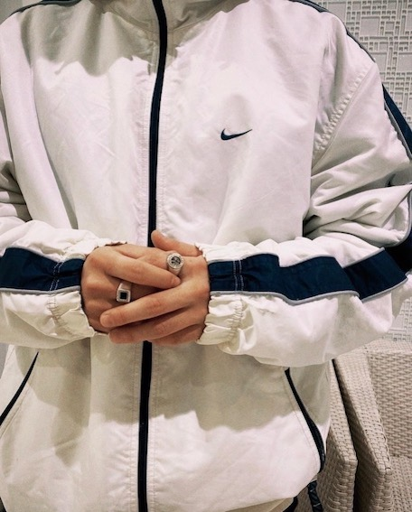
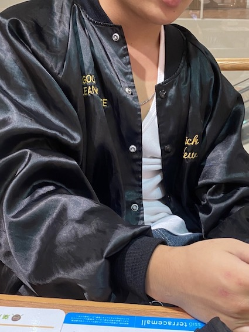

ページトップ
ここはWEBプログラミング最終課題のページトップです。
タブをクリックしてそれぞれのページを見てみてください。
WEBプログラミングでの課題まとめ
第3回課題「HTML完成版」について

＜画像をクリックで第3回課題へ＞
作成した際に工夫した点・感想
・サイトを開いた際に、メニューが1番先頭に来るようにして興味を引くことを意識して作成した。また、価格などが不透明だと来店することを躊躇ってしまう場合があるため、価格表をメニューの横に並べることで、 来店への計画を立てやすいようにした。さらに、人気メニューをランキング形式にしてまとめておくことでどのメニューを頼めばいいかを考えやすいようになることを木ていとして作成した。第3回では初めてWEBサイトを初めて作成したため、 わからないことやうまくいかないことが多くあったが、自分なりに色々と調べることで解決方法を見つけながら製作を進めることができたため、自分のためになったと考えている。第5回課題「HTML＋CSS完成版」について

＜画像をクリックで第5回課題へ＞
作成した際に工夫した点・感想
・第3回で作成したWEBサイトに加えたデザインは茶色を基調としており、私がイメージしている木が使われている酒場をWEbサイトでも表現できるように意識して作成にあたった。しかし、背景への写真の挿入などが 自分のイメージしていた通りにならなかったため、その部分については調べ、聞くなどをしてもっと完成形に近づけていきたいと感じた。また,表の色も変更したが背景に画像を挿入できなかったため、色合いなどを 考えることがとても難しかった。こういった問題を解決するためにより深く学んでいきたいと考えた。
第6回課題「好きなもの紹介ページ」について

＜画像をクリックで第6回課題へ＞
作成した際に工夫した点・感想
・私はHIPHOPをこのWEBサイトを通じて紹介した。HIPHOPは万人受けが期待できるものではなく、しっかりとした説明がなければわかりづらい文化であるため、わかりやすい説明文を会えるように努力した。 また、写真を使用することでシンプルな印象を変え、色も黒で統一することでHIPHOPらしい雰囲気を感じれるものになるようにした。そして、好きな曲などを紹介しているページでは興味を持った人たちが HIPHOPの曲を聞きやすくなるように、おすすめのラッパーや曲などを紹介するようにした。このWEEBサイト作成を通じて自分の好きなものを紹介することはとても楽しかったため、 こういったWEBサイトの使い方もしていきたいと考えることができた。
生まれ育った街「平塚」紹介
平塚市のおすすめスポット
私が生まれ、今まで生活してきた平塚市にはいくつかの私のお勧めスポットがあります。
もしきた際にはぜひ行ってみてください！

テレビ塔からみた夜景
平塚おすすめスポット①・湘南平
平塚市には湘南平という夜景を楽しむことができる観光スポットがあります。湘南平は山の上にあり、湘南平のテレビ塔へ登ることで夜の静かな海や街の夜景を見ることができます。
湘南平のテレビ塔や展望台には南京錠がとても多くの南京錠がかけられており、その一つ一つには名前が書いてあります。これは恋人同士が湘南平を訪れた際に恋人同士の名前を南京錠に書き、それをかけて愛を誓うという行為によってかけられています。
近年では全国各地のデートスポットなどで似たような行為が行われていますが、この儀式の発祥の地は湘南平のテレビ塔だと言われています。この儀式はアーティストである湘南乃風の恋時雨の一節にも登場しており、なかなかに有名です。
しかし近年では撤去される南京錠も増え、今では南京錠はまばらになってしまっています。
このような風習もあり、湘南平は多くの人々が訪れていますが、この風習以外にも春は桜が咲き誇り、夜桜も楽しむことができることから平塚では写真スポットとしても有名です。
平塚お勧めスポット②・3peace古着倉庫
3peace古着倉庫
平塚には最近できたおすすめスポット、3peace古着倉庫があります。みなさんも写真のように服が大量に積まれている光景をTikTokなどでみたことがあるのではないでしょうか。
ここには何百着もの古着が商品として置かれており、入るだけでワクワクとした気分になることができます。この古着倉庫は普段は古着店を経営している人たちが古着の買い付けを行っており、土日祝日限定で一般開放を行っています。
ここで商品を買う際には5000円以上買わなければいけないという決まりがありますが、欲しいものが多すぎてすぐに5000円以上カートに入れてしまうと思います。
私も実際にここを何度も利用していますが、アウターが1500円で購入できたり、デニムが2200円で購入できたりするので古着好きな人はぜひ行ってみて欲しいと思います！
3Peace古着倉庫で実際に買ったもの
|  |  |
| ＜¥2200＞ | ＜¥1500＞ |
私について
私の今まで
私は神奈川県平塚市で生まれ、現在まで過ごしてきました。小学校から中学校までを平塚の市内ですごし、その後茅ヶ崎高校に入学し専修大学へ進学しました。
そういった生活の中での私を紹介していきたいと思います
〜中学校〜
私は中学校からサッカーを部活動として初め、3年間励みました。最初はボールの蹴り方もパスの回し方もわからず、一年生で初めて出場した公式戦では初出場初骨折という不名誉な「初」になりました。 そんな散々なスタートになりましたがその後はしっかりと部活に励み、その努力も報われ3年生の市内大会では無失点で優勝し県大会に進出しました。 県大会では苦戦し、仲間の骨折などもありましたがベスト16という今までで最高の成績で終えることができました。
〜高校〜
全く知らない人が大半を占めていた高校では交友関係を広げることは難しかったですが、いろいろな人の助けもあり友人を多くの作ることができました。
多くの仲間と出会ったことで、今までにない様々な経験をすることができました。特に思い出に残っているものは卒業式前にBTSの「Dynamite」を踊ったことです。
このように踊った様子をYoutubeにUPしてみたところ171万回（1月20日現在）も再生されていて、このことは自分でも誇れるものだと思っています。
自分にとっても変化が多く、様々なことを経験することができた高校生活は、一際目立つ思い出として自分の中に残っています。
〜大学入学から最近〜
大学に入学してからは全く触ったことのないパソコンに触れ、プログラミングなどの勉強を進めていく中で多くのことを学ぶことができています。
そして大学生になってから新たにアルバイトを始め、アパレルショップのスタッフになることができました。自分の好きな系統とはまた違ったブランドになりましたが、コミュニケーションを取ることが楽しく、服についてもいろいろなことを学ぶことができています。
そして最近、そのブランドの商品をインスタなどで共有していくことになりました。今は投稿もフォロワーも少ないですが、もしよかったらフォローしてくれると嬉しいです！
最近ハマっていること
私は最近お香をたくことにハマっています。これは私の友人から勧められたものです。
私の友人は以前にお香立てを購入しており、そのデザインが非常に私の好みだったのです。そして私もお香たてが欲しくなり、お香たてを購入したことがきっかけでハマり始めました。
お香にはリラックス効果があり、部屋でお香をたくことによって香りを楽しみつつ気分転換やリラックスをすることができます。
また、嗅覚からのリラックス効果以外にも空間を漂う煙を見ることで視覚的にもリラックス効果を得ることができます。
私も寝る前やお風呂上がりなどのリラックスしたい時にお香を焚くことが多く、そのおかげでリラックスして一日を終えることができています。
さらに、お香たてはインテリアとしても優秀で、部屋に置いてあるだけでおしゃれになることも魅力の一つです。
その他にも浄化・殺菌や吸湿効果、虫除けや消臭などの効果もあり、お香をぜひお勧めしたいです。（詳しくはこちら）
お香には様々な種類があり、人によって好みが別れると思いますが私がお勧めしたいお香はナグチャンパというお香です。
このお香はSupremeの店内で焚かれているお香で、天然のオイルをふんだんに使用しており、甘くより深い香りで強すぎずマイルドな香りを味わうことができます。
原産国はインドですが、Amazonや楽天などの通販サイトなどで購入することができます。気になった方はぜひ見てみてください！